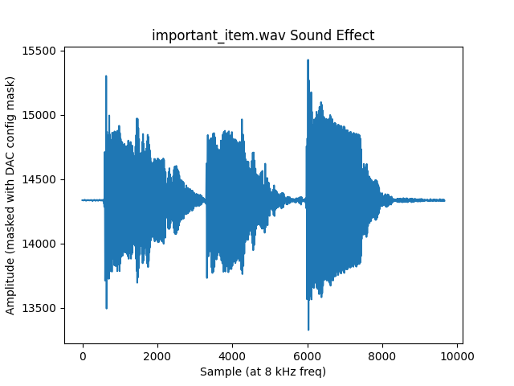

Visual Assets
Designing the visuals of the game includes both tiles (16 blocks x 16 blocks) and levels (11 tiles x 16 tiles). We did not directly use the assets from the original Zelda game, however many designs are inspired by Zelda or other video games. Everything is essentially hard coded such that the designs can be displayed by passing them to the VGA driver. There are essentially 2 steps to each element: 1) visually lay out the desired appearance of the tile or level, and 2) encode the design into the game program.
Tiles
Tiles can be visually designed using a spreadsheet program (we used Google Sheets) adjusted such that the width of the columns and the height of the rows are the same (ie. each block is a cell of the spreadsheet). It is helpful to enter the approximate hex value for the 16 possible colors of the VGA screen as custom colors in order to best approximate what the design will look like on the screen. Then one can block off 16x16 squares of cells using border outlines and fill in the background colors of cells to visualize the desired tile design.
Tile designs required for the demo level of the game include (not exhaustive):
- Main Character: front, back, left and right views for each of: standing/walking frame 1, walking frame 2, attacking
- Enemies: front, back, left, and right views
- Entities: includes boulder, sign, gems, weapon, hearts
- Background: plants, water, walls, etc for 3 distinct settings (initial cave, outside, puzzle cave)
To convert tile designs into code, we developed a Python script which the user inputs the design by the
corresponding number of the color of each block (as defined by the VGA driver) and outputs the properly formatted
16x2 array of long longs which can be copy/pasted into the assets.h header file in which all designs are stored.
This is essentially a task in string manipulation, but was instrumental to our efficiency because the tile design
used by the VGA driver needs to be in terms of pixels rather than blocks. Furthermore, the game engine required each
16-pixel length of colors to be reversed which would have made it extremely difficult to manually enter designs. The
script also generates the transparency mask used for characters and entities which do not take up the entire 16x16
tile such that one should be able to see the background “through” parts of the tile. The mask is simply generated
based on the following: ‘F’ in the input = transparent block, any other number is an opaque colored block. Masks are
stored as arrays of 16x2 arrays of characters such that a 1 indicates a transparent pixel, 0 indicates an opaque
pixel. This output from the Python script can also be pasted into the header file.
Example of tile encoded as hex numbers
const long long TREE_TILE[16][2] = {
{0x001111BBBBBBBBBB, 0xBBBBBBBBBBBBBBBB},
{0x0011111111BB11BB, 0xBB00000000000000},
{0x11111111111111BB, 0xBB11000011111111},
{0x11110011111111BB, 0xBB00001111111111},
{0x1111111111111111, 0xBB00000011111111},
{0x1111111100111111, 0xBB00110011110011},
{0x1111111111111111, 0x0000001111111111},
{0x11111111111111BB, 0x0000001111111111},
{0x1100111111111111, 0x0000001111001111},
{0x1111111111111111, 0xBB00001111111111},
{0x1111111111111111, 0x0000001111111111},
{0x1111111111111111, 0xBBBB001111111111},
{0x1111110011111111, 0xBBBB000011001111},
{0x11111111111111BB, 0xBBBBBB0000001111},
{0xCCCC0011111111BB, 0xBBBBBBBBBB0000CC},
{0x0000000000BBBBBB, 0x0000000000000000} };
Screens
There are 3 parts to each screen as encoded into the assets header file:
- An array of which design should be on each tile
- An array of “interactables”- mostly entities but also includes enemies, entrances/exits between screens
- A wall mask- indicates which tiles the player can “stand on” versus a wall, for example, which restricts player movement
Similarly, we developed a python script to more easily encode the design, but it only formatted the tile designs and monotone tiles (part 1) so parts 2 and 3 were written manually because it was easy enough not to require automation. Enough time was spent iterating on screen designs that it was possible to memorize the encodings of respective colors and interactables simply by working through the code. Interactables are encoded an array of hex numbers per screen where the hex digits specify the type of interactable and its initial position on the screen. The wall mask is simply an array of shorts where each binary digit indicates whether a tile is a “wall” (1) or not (0).
Example of the 3 parts of a screen encoding as hex numbers:
const long long S00_WAKEUP[11][2] = { // blue tiles cave setting. bed
{0xF9F9F9F9F9F9F9F7,0xF7F9F9F9F9F9F9F9},
{0xF9F9F9F9F9F9F9F7,0xF7F9F9F9F9F9F9F9},
{0xF9F9F7F7F7F7F7F7,0xF7F7F7F7F7F7F9F9},
{0xF9F9F7F8F7F7F7F7,0xF7F7F7F8F7F7F9F9},
{0xF9F9F7F7F7F4F7F7,0xF7F7F7F7F7F7F9F9},
{0xF9F9F7F7F7F7F7F7,0xF7F7F7F7F7F7F9F9},
{0xF9F9F7F7F7F7F7F7,0xF7F7F7F7F8F7F9F9},
{0xF9F9F7F7F7F7F7F7,0xF7F7F7F7F7F7F9F9},
{0xF9F9F7F7F7F7F7F7,0xF7F7F7F7F7F7F9F9},
{0xF9F9F9F9F9F9F9F7,0xF7F9F9F9F9F9F9F9},
{0xF9F9F9F9F9F9F9F7,0xF7F9F9F9F9F9F9F9}
};
const short S00_IAS[] = { // top/bottom portals, sign, MC start pos
0x0170, // top portal 1
0x027A, // bottom portal 1
0x0180, // top portal 2
0x028A, // bottom portal 2
0x3092, // sword to be picked up
0x3268, // sign monsters warning
0XA044, // main character spawn point
0x2946, // heart
0xFFFF,
};
const short S00_WALL[11] = {
0b1111111001111111,
0b1111111001111111,
0b1100000000000011,
0b1101000000010011,
0b1100010000000011,
0b1100000000000011,
0b1100000000001011,
0b1100000000000011,
0b1100000000000011,
0b1111111001111111,
0b1111111001111111
};
The demo level includes 9 screens (in no particular order):
- Wakeup screen
- Hallway directing player toward the weapon
- Allows player to pick up the weapon enabling them to fight enemies
- Contains enemies the player must fight as well as a “villager” the player must pay in order to proceed through the level
- “Boss fight” in which the player must fight 2 spider enemies with > 1 HP
- Hallway leading to the puzzle cave
- Puzzle the player must solve in order to get gems to pay the villager
- Reward for solving the puzzle (aforementioned gems)
- End screen
Screen 1 is designed as a cave built out of blue stones/gems. Screens 3-6 & 9 are “outside.” Screens 7-8 are in a cave themed as black and red stones.
As far as relative placement of the screens and traversal through screens within the level, the game was implemented such that screen transition “portals” were located on the edge of the screen (top, bottom, left, or right). All screens were spatially arranged with respect to each other. While we modularized the development of each screen, they were stored such that upon standing on a transition-enabled tile, the character simply walked in the respective direction onto the next screen. For example, walking onto a portal on the left side of the screen would take the player to the screen positioned left of the current one.
Example Screens
Non-Level Screens
Start Screen and Animation:
When the Pico is turned on we display a screen with the title of the game and controls. This is accomplished using functions in the VGA driver code and is contained in the draw_start_screen() function. The appearance of the start screen is governed by the game_state variable game_start such that if the game has not started the start screen will be displayed. We wanted the text “Press L to start” to blink on the start screen. This is accomplished by continuously drawing a black rectangle over this text, then printing the start screen so that the desired text flashes.
When the player presses L to start the game, we display a one-time screen with text indicating for the character to wake up. This text is displayed for a short amount of time before being replaced by the layout of the actual game. All timing of the start screens is implemented by using the sleep_ms function to pause between printing text/black rectangles.
Death Screen:
The screen displayed when the character dies is governed by the die() function. This screen also consists of printing plain text, “You died,” similarly to the start screen. We keep track of how many times the player has died within the game state in order to add to the text each consecutive time the player dies. For example, on the second death the screen will read “You died again.” die() is called based on when the characters’ hearts have run out. The death screen is displayed until the player presses ‘c.’ When ‘c’ is input to the serial terminal, the character is respawned and the rest of the screen is redrawn so the death screen disappears.
Sound
All sound generation for the game can be split into two distinct groups: sound effects and background music. We used a 2-channel DAC to produce analog signals that would ultimately be connected to external speakers with a 3.5mm audio jack. Both the sound effects and background music run simultaneously on separate channels of the DAC for the sake of simplicity.
We decided to create our own sound effects for this game. Most of these sound effects were played on a guitar, drum or other household item, and were recorded on a laptop. These small 1-second sound bites were recorded on Audacity, then exported as signed 16-bit PCM .wav files. Because a .wav file is simply an array of values corresponding to amplitudes of the sound output at each sampling time, we knew we could store these values in array-form. We chose to sample these sound effects at 8 kHz to save space (as opposed to the common 44.1 kHz sampling frequency), but we did find some aliasing in the audio quality. We developed a python script to extract the amplitude content of the .wav files, scale each amplitude to a value appropriate for the 12-bit DAC, perform a bitwise-OR with the bit-mask for the DAC’s expected serial input, and produce a header file containing a constant array of shorts for each sound effect. The plot of a single sound effect array is pictured below. By declaring these arrays as constant, they could be stored in flash memory. This way, any time we would want to play a sound effect, we could configure a DMA channel to iterate through the array and send each array value to the serial output buffer.
To make this configuration process easy for our game development, we created an enumeration for each sound effect,
as well as an array of pointers to constant shorts referencing the first element in each sound effect array and an
array of integers containing the length of each sound effect array. We also developed a function to configure and
start each DMA sequence to keep our code clean, called initialize_sound_effect(int). In testing our design, we found
that we would often trigger a new sound effect before the previous sequence was completed, causing problems with
latency and glitches. To fix this, we changed the initialize_sound_effect function to instead cancel the current DMA
sequence and immediately begin a new one (unless the sound effect called was the walking sound, which had the lowest
priority).
The other half of our sound generation is background music, which is synthesized with Direct Digital Synthesis (DDS) in a timer interrupt at 40 kHz. For this synthesis, we developed a lookup table which closely resembles the sound wave produced by the synthesizers in the NES. A single period of this sound is pictured below. We selected a duet from Musescore.com (listed in references). This arrangement contains both 16th notes and triplets, so 12 subdivisions per beat are required to keep perfect time. Therefore, we created an array to contain each note in the song, with a secondary array to contain the length of each particular note. For example, a scale of quarter notes would have two arrays as follows: {C, D, E, F, G, A, B, C} and {12, 12, 12, 12, 12, 12, 12, 12}. Each note in the array has a #define statement corresponding to the desired frequency. Every time the timer interrupt is called, a variable is incremented. If this variable is equal to 2500, (i.e. the number of interrupts at 40 kHz, for 1/12 of a beat at 130 bpm), it is reset, and another variable corresponding to the number of subdivisions remaining for a particular note is decremented. Once this variable hits 0, the next element in the song array is referenced. When this happens, the phase accumulator increment value is changed, the accumulator is incremented, and the lookup table is referenced corresponding to this accumulator. To account for note attacks and decays, a scalar to the amplitude is multiplied by the lookup table value before being sent to the DAC.

We wanted two independent parts to be played in the interrupt, so to allow for two-part music (duet style) while still only using one channel of the DAC, the calculated DAC outputs for each part are averaged. We found that this was almost always perfect, except for when each part was simultaneously playing the same note. Here, we found that the music would get really quiet (potentially due to phase differences in each accumulator). To fix this, we simply increased the desired frequency of all notes in the second part by 1. While not a perfect fix, this solution was barely noticeable by the untrained ear.
Two functions were added to help control the use of sound in our game development: a stop function, which resets all music parameters and sets a boolean music_playable low (which encloses all of the contents of the timer ISR with an if statement), and a restart function, which sets music_playable high. We added this functionality so we can stop and start the music corresponding to which screen the player is on.